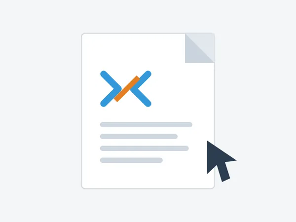
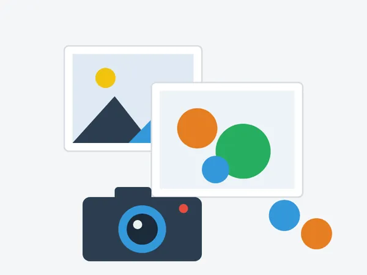

HTML
Структура сторінок: заголовки, абзаци, навігація і зображення.
Це навчальний проєкт з дисципліни вебтехнологій. Сторінки побудовано на HTML5, оформлює один файл CSS, частина елементів реагує на дії через JavaScript.

Структура сторінок: заголовки, абзаци, навігація і зображення.
Оформлення: кольори, відступи, сітка карток і адаптивність.

Дрібна інтерактивність: тема, квіз і перевірка форми. Без сервера.
Демонстраційна форма: поля перевіряються в браузері, але повідомлення нікуди не надсилається і ніде не зберігається.